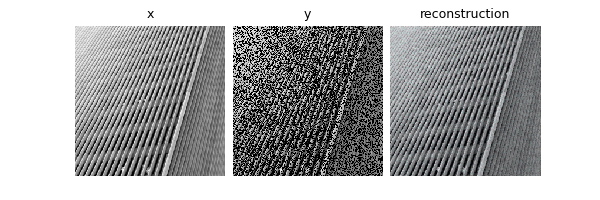

Note
Go to the end to download the full example code.
Image transformations for Equivariant Imaging#
This example demonstrates various geometric image transformations
implemented in deepinv that can be used in Equivariant Imaging (EI)
for self-supervised learning:
Shift: integer pixel 2D shift;
Rotate: 2D image rotation;
Scale: continuous 2D image downscaling;
Euclidean: includes continuous translation, rotation, and reflection, forming the group \(\mathbb{E}(2)\);
Similarity: as above but includes scale, forming the group \(\text{S}(2)\);
Affine: as above but includes shear effects, forming the group \(\text{Aff}(3)\);
Homography: as above but includes perspective (i.e pan and tilt) effects, forming the group \(\text{PGL}(3)\);
PanTiltRotate: pure 3D camera rotation i.e pan, tilt and 2D image rotation.
See docs for full list.
These were proposed in the papers:
Shift,Rotate: Chen et al., Equivariant Imaging: Learning Beyond the Range SpaceScale: Scanvic et al., Self-Supervised Learning for Image Super-Resolution and DeblurringHomographyand the projective geometry framework: Wang et al., Perspective-Equivariant Imaging: an Unsupervised Framework for Multispectral Pansharpening
import torch
from torch.utils.data import DataLoader, random_split
from torchvision.transforms import Compose, ToTensor, CenterCrop, Resize
import deepinv as dinv
from deepinv.utils.demo import get_data_home
device = dinv.utils.get_freer_gpu() if torch.cuda.is_available() else "cpu"
ORIGINAL_DATA_DIR = get_data_home() / "Urban100"
Define transforms. For the transforms that involve 3D camera rotation
(i.e pan or tilt), we limit theta_max for display.
transforms = [
dinv.transform.Shift(),
dinv.transform.Rotate(),
dinv.transform.Scale(),
dinv.transform.Homography(theta_max=10),
dinv.transform.projective.Euclidean(),
dinv.transform.projective.Similarity(),
dinv.transform.projective.Affine(),
dinv.transform.projective.PanTiltRotate(theta_max=10),
]
Plot transforms on a sample image. Note that, during training, we never
have access to these ground truth images x, only partial and noisy
measurements y.
x = dinv.utils.load_example("celeba_example.jpg")
dinv.utils.plot(
[x] + [t(x) for t in transforms],
["Orig"] + [t.__class__.__name__ for t in transforms],
)
Now, we run an inpainting experiment to reconstruct images from images masked with a random mask, without ground truth, using EI. For this example we use the Urban100 images of natural urban scenes. As these scenes are imaged with a camera free to move and rotate in the world, all of the above transformations are valid invariances that we can impose on the unknown image set \(x\in X\).
dataset = dinv.datasets.Urban100HR(
root=ORIGINAL_DATA_DIR,
download=True,
transform=Compose([ToTensor(), Resize(256), CenterCrop(256)]),
)
train_dataset, test_dataset = random_split(dataset, (0.8, 0.2))
train_dataloader = DataLoader(train_dataset, shuffle=True)
test_dataloader = DataLoader(test_dataset)
# Use physics to generate data online
physics = dinv.physics.Inpainting((3, 256, 256), mask=0.6, device=device)
0%| | 0/135388067 [00:00<?, ?it/s]
23%|██▎ | 29.8M/129M [00:00<00:00, 311MB/s]
50%|████▉ | 64.4M/129M [00:00<00:00, 342MB/s]
77%|███████▋ | 99.5M/129M [00:00<00:00, 353MB/s]
100%|██████████| 129M/129M [00:00<00:00, 340MB/s]
Extracting: 0%| | 0/101 [00:00<?, ?it/s]
Extracting: 21%|██ | 21/101 [00:00<00:00, 201.15it/s]
Extracting: 47%|████▋ | 47/101 [00:00<00:00, 234.48it/s]
Extracting: 70%|███████ | 71/101 [00:00<00:00, 222.01it/s]
Extracting: 93%|█████████▎| 94/101 [00:00<00:00, 218.26it/s]
Extracting: 100%|██████████| 101/101 [00:00<00:00, 219.22it/s]
Dataset has been successfully downloaded.
For training, use a small UNet, Adam optimizer, EI loss with homography
transform, and the deepinv.Trainer functionality:
Note
We only train for a single epoch in the demo, but it is recommended to train multiple epochs in practice.
model = dinv.models.UNet(
in_channels=3, out_channels=3, scales=2, circular_padding=True, batch_norm=False
).to(device)
losses = [
dinv.loss.MCLoss(),
dinv.loss.EILoss(dinv.transform.Homography(theta_max=10, device=device)),
]
optimizer = torch.optim.Adam(model.parameters(), lr=1e-3, weight_decay=1e-8)
model = dinv.Trainer(
model=model,
physics=physics,
online_measurements=True,
train_dataloader=train_dataloader,
eval_dataloader=test_dataloader,
epochs=1,
losses=losses,
optimizer=optimizer,
verbose=True,
show_progress_bar=False,
save_path=None,
device=device,
).train()
The model has 444867 trainable parameters
Train epoch 0: MCLoss=0.008, EILoss=0.024, TotalLoss=0.032, PSNR=9.754
Eval epoch 0: PSNR=17.21
Best model saved at epoch 1
Show results of a pretrained model trained using a larger UNet for 40 epochs:
model = dinv.models.UNet(
in_channels=3, out_channels=3, scales=3, circular_padding=True, batch_norm=False
).to(device)
ckpt = torch.hub.load_state_dict_from_url(
dinv.models.utils.get_weights_url("ei", "Urban100_inpainting_homography_model.pth"),
map_location=device,
)
model.load_state_dict(ckpt["state_dict"])
x = next(iter(train_dataloader))
x = x.to(device)
y = physics(x)
x_hat = model(y)
dinv.utils.plot([x, y, x_hat], ["x", "y", "reconstruction"])

Downloading: "https://huggingface.co/deepinv/ei/resolve/main/Urban100_inpainting_homography_model.pth?download=true" to /home/runner/.cache/torch/hub/checkpoints/Urban100_inpainting_homography_model.pth
0%| | 0.00/7.90M [00:00<?, ?B/s]
100%|██████████| 7.90M/7.90M [00:00<00:00, 164MB/s]
Total running time of the script: (2 minutes 10.784 seconds)